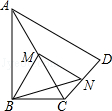
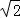

2016年北京市中考数学试题 · 数学解答题 第23题 · 对应解析
23．（5分）（2016•北京）如图，在四边形ABCD中，∠ABC=90°，AC=AD，M，N分别为AC，CD的中点，连接BM，MN，BN．
（1）求证：BM=MN；
（2）∠BAD=60°，AC平分∠BAD，AC=2，求BN的长．

【解答】（1）证明：在△CAD中，∵M、N分别是AC、CD的中点，
∴MN∥AD，MN=AD，
在RT△ABC中，∵M是AC中点，
∴BM=AC，
∵AC=AD，
∴MN=BM．
（2）解：∵∠BAD=60°，AC平分∠BAD，
∴∠BAC=∠DAC=30°，
由（1）可知，BM=AC=AM=MC，
∴∠BMC=∠BAM+∠ABM=2∠BAM=60°，
∵MN∥AD，
∴∠NMC=∠DAC=30°，
∴∠BMN=∠BMC+∠NMC=90°，
∴BN2=BM2+MN2，
由（1）可知MN=BM=AC=1，
∴BN=
